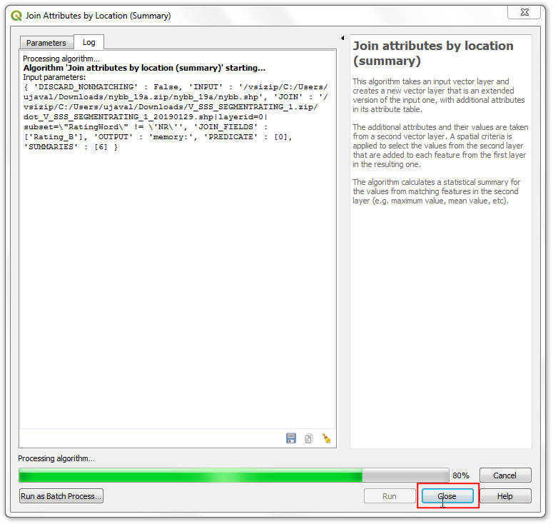
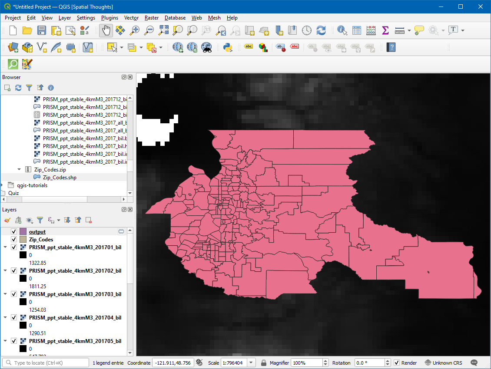
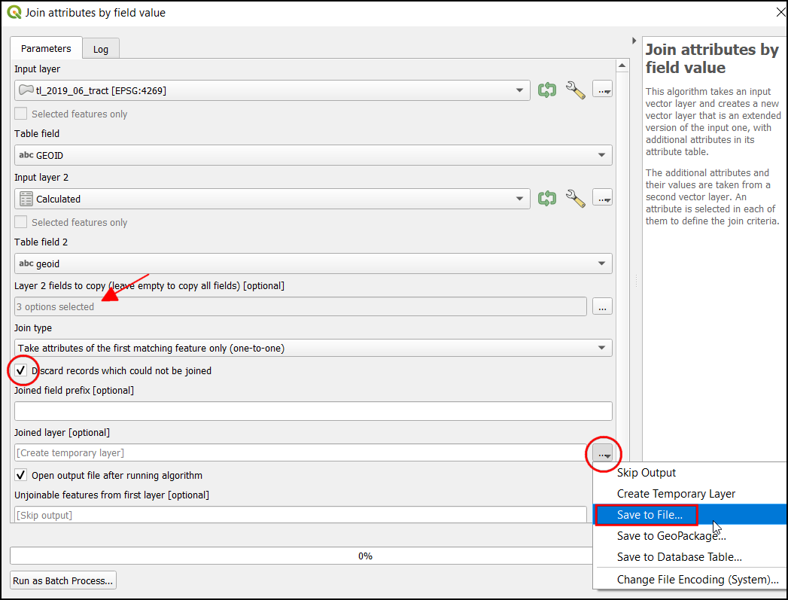
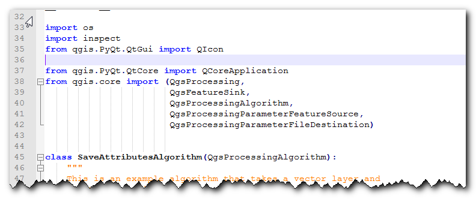
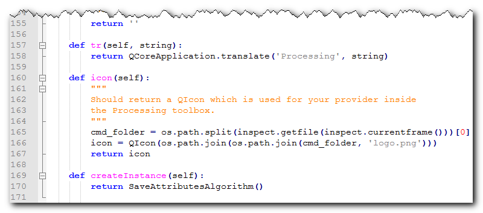

Een plug-in voor Processing bouwen (QGIS3)¶
In de vorige handleiding Een plug-in in Python bouwen (QGIS3), leerde u hoe een plug-in voor Python te maken - inclusief de gebruikersinterface en aangepaste logica voor het verwerken van de gegevens. Hoewel dit type plug-ins nuttig zijn, legt het de last van het ontwerpen van de gebruikersinterface bij de auteur van de plug-in. Dit heeft tot gevolg dat elke plug-in verschillende manieren heeft om er mee te werken - wat voor gebruikers verwarrend is. Ook werken gewone plug-ins niet samen met andere delen van QGIS. U kunt bijvoorbeeld niet de functionaliteit van een plug-in uit een ander algoritme gebruiken. Als de plug-in die u wilt schrijven primair is bedoeld voor analyses, en de interactie met de gebruiker die u wilt is beperkt tot de gebruiker de in- en uitvoer te laten kiezen, is er een veel eenvoudiger en aanbevolen manier om plug-ins te schrijven met het framewerk Processing. Het verwijdert de noodzaak voor u om de gebruikersinterface te ontwerpen - wat het proces vereenvoudigt. De ingebouwde bibliotheek voor Processing maakt een standaard interface voor Processing, afhankelijk van uw invoer, die eruit ziet en aanvoelt net als elk ander algoritme voor processing in QGIS. Het integreert ook naadloos met de rest van het framewerk Processing - dus uwplug-in voor algoritmes kan worden gebruikt voor het verwerken van massa, Grafische modellen bouwen, aangeroepen worden vanuit de console voor Python etc.
Overzicht van de taak¶
We zullen een eenvoudige plug-in opnieuw implementeren, vanuit de handleiding Een plug-in in Python bouwen (QGIS3), als een plug-in voor Processing. Het zal leiden tot een nieuwe provider voor Processing, genaamd Attributen opslaan, en een algoritme “Attributen opslaan als CSV” dat gebruikers in staat zal stellen een vectorlaag uit te zoeken en de attributen daarvan weg te schrijven naar een CSV-bestand.
De gereedschappen ophalen¶
Een tekstbewerker of een Python IDE¶
Elke soort softwareontwikkeling vereist een goede tekstbewerker. Als u al een favoriete tekstbewerker of een IDE (Integrated Development Environment) heeft, zou u die kunnen gebruiken voor deze handleiding. Anders biedt elk platform een grote variëteit van gratis of betaalde opties voor tekstbewerkers. Kies er een die aan uw wensen voldoet.
Deze handleiding gebruikt de bewerker Notepad++ op Windows.
Windows
Notepad++ is een goede gratis tekstbewerker voor Windows. Download en installeer de tekstbewerker Notepad++.
Notitie
Indien u Notepad++ gebruikt, zorg er dan voor dat u gaat naar en Omzetten in spaties inschakelt. Python is bijzonder gevoelig voor witruimte en deze instelling zal er voor zorgen dat tabs en spaties op de juiste manier worden behandeld.
plug-in Plugin Builder¶
Er is een nuttige plug-in voor QGIS, genaamd Plugin Builder die alle noodzakelijke bestanden en onderliggende code voor een plug-in maakt. Zoek en installeer de plug-in Plugin Builder. Bekijk Plug-ins gebruiken voor meer details over hoe plug-ins te installeren.
plug-in Plugins Reloader¶
Dit is een andere nuttige hulpplug-in die het iteratief ontwikkelen van plug-ins mogelijk maakt. Met behulp van deze plug-in kunt u de code voor uw plug-in wijzigen en die hebben gereflecteerd in QGIS zonder dat u QGIS elke keer opnieuw moet starten. Zoek en installeer de plug-in Plugin Reloader. Bekijk Plug-ins gebruiken voor meer details over hoe plug-ins te installeren.
Notitie
Plugin Reloader is een experimentele plug-in. Zorg er voor dat u ook Ook de experimentele plugins tonen in de instellingen van Plug-ins installeren en beheren selecteert, als u hem niet kunt vinden.
Procedure¶
Open QGIS. Ga naar .

U zult het dialoogvenster zien van QGIS Plugin Builder met een formulier. U kunt het formulier vullen met details met betrekking tot onze plug-in. De Class name zal de naam zijn van de Python Class die de logica van de plug-in bevat. Dit zal ook de naam zijn van de map die alle bestanden van de plug-in bevat. Voer
SaveAttributesin als de naam van de klasse. De Plugin name is de naam waarmee uw plug-in zal verschijnen in Plug-ins beheren en installeren. Voer de naam in alsAttributen opslaan (Processing). Voeg een beschrijving toe in het veld Description. De Module name zal de naam zijn van het belangrijkste Python-bestand voor de plug-in. Voer die in alssave_attributes_processing. Laat de versienummers zoals zij zijn en voer uw naam en e-mailadres in in de toepasselijke velden. Klik op Next.

Voer een korte beschrijving van de plug-in in voor het dialoogvenster About en klik op Next.

Selecteer
Processing Provideruit de keuze Template. De waarde Algorithm name is hoe gebruikers uw plug-in zullen zien in de Toolbox van Processing. Voer het in alsAttributen opslaan als CSV. Laat Algorithm group leeg. Voer de Provider name in alsAttributen opslaan. Voer een beschrijving in het veld Provider description in. Klik op Next.

Plugin builder zal u vragen naar het type van de te maken bestanden. Behoud de standaard selectie en klik op Next.

U kunt, omdat we niet van plan zijn om onze plug-in te publiceren, de waarden van Bug tracker, Repository en Home page op de standaard laten staan. Selecteer het vak Flag the plugin as experimental aan de onderzijde en klik op Next.

U zult worden gevraagd een map op te geven voor uw plug-in. Sla die, voor nu, op in een map die u gemakkelijk kunt vinden op uw computer en klik op Generate.

Druk vervolgens op de knop Generate. U zult een dialoogvenster ter bevestiging zien als de sjabloon voor uw plug-in eenmaal is gemaakt.

Notitie
U zou een bericht kunnen krijgen dat zegt dat pyrcc5 niet in het pad is gevonden. U kunt dit bericht negeren.
Plug-ins worden in QGIS opgeslagen in een speciale map. We moeten onze map van onze plug-in naar die map kopiëren voor we die kunnen gebruiken. Zoek, in QGIS, de map voor uw huidige profiel door te gaan naar .

Kopieer, in de profielmap, de map Plugin naar de submap .

Nu zijn we klaar om een eerste blik te werpen op de nagelnieuwe plug-in die we hebben gemaakt. Sluit QGIS en start het opnieuw. Ga naar en schakel de plug-in
Attributen opslaan (Processing)in op de tab Geïnstalleerd.

Ga naar . U zult zien dat er een nieuwe provider aan de onderzijde staat, genaamd
Attributen opslaan. Vergroot het om een algoritme, genaamdAttributen opslaan als CSVte zoeken. Dubbelklik erop om het te starten.

U zult een bekend dialoogvenster voor algoritmes van Processing zien, met een keuzelijst voor een invoerlaag en een selectievak voor een uitvoerlaag. We zullen nu dit dialoogvenster aanpassen zodat het aan onze behoeften voldoet. Sluit dit dialoogvenster.

Ga naar de map met de plug-in en laadt het bestand
save_attributes_processing_algorithm.pyin een tekstbewerker. Voor onze plug-in nemen we een vectorlaag als invoer en schrijven weg naar een bestand CSV als uitvoer. Dus in plaats vanQgsProcessingParameterFeatureSinkte importeren als uitvoer - wat bestemd is voor een vectorlaag - voegQgsProcessingParameterFileDestinationtoe, wat bestemd is voor een bestand.from qgis.core import (QgsProcessing, QgsFeatureSink, QgsProcessingAlgorithm, QgsProcessingParameterFeatureSource, QgsProcessingParameterFileDestination)
Scroll vervolgens naar beneden en definieer de parameter voor de uitvoer onder de methode
initAlgorithm()met de volgende code.self.addParameter( QgsProcessingParameterFileDestination( self.OUTPUT, self.tr('Output File'), 'CSV files (*.csv)', ) )

Laten we onze plug-in opnieuw laden zodat we de wijzigingen kunnen zien in het dialoogvenster. Ga naar . Selecteer
save_attributes_processingin het dialoogvenster Configure Plugin reloader.

Klik op de knop Reload plugin om de laatste versie van de plug-in te laden. We moeten, om deze nieuw functionaliteit te testen, enkele lagen in QGIS laden. Start, nadat u enkele lagen hebt geladen, het algoritme . U zult zien dat de uitvoer is gewijzigd naar een bestand in plaats van naar een laag.

Laten we enige logica toevoegen aan het algoritme dat de geselecteerde vectorlaag neemt en de attributen wegschrijft naar een CSV-bestand. De uitleg voor deze code is te vinden in Beginnen met programmeren in Python (QGIS3). Het opmerkelijke verschil hier is de teller die helpt om de voortgang van de verwerking weer te geven. Voeg de volgende code toe aan de methode
processAlgorithmen sla het bestand op.def processAlgorithm(self, parameters, context, feedback): """ Here is where the processing itself takes place. """ source = self.parameterAsSource(parameters, self.INPUT, context) csv = self.parameterAsFileOutput(parameters, self.OUTPUT, context) fieldnames = [field.name() for field in source.fields()] # Compute the number of steps to display within the progress bar and # get features from source total = 100.0 / source.featureCount() if source.featureCount() else 0 features = source.getFeatures() with open(csv, 'w') as output_file: # write header line = ','.join(name for name in fieldnames) + '\n' output_file.write(line) for current, f in enumerate(features): # Stop the algorithm if cancel button has been clicked if feedback.isCanceled(): break # Add a feature in the sink line = ','.join(str(f[name]) for name in fieldnames) + '\n' output_file.write(line) # Update the progress bar feedback.setProgress(int(current * total)) return {self.OUTPUT: csv}

Laadt, terug in het hoofdvenster van QGIS, de plug-in opnieuw door te klikken op de knop Reload plugin. Start het algoritme . Selecteer een laag voor de Input layer. Klik vervolgens op de knop … naast Output file.

Noem het uitvoerbestand
test.csven klik op Uitvoeren. Het algoritme zal worden uitgevoerd en een CSV-bestand produceren op de gekozen locatie.

Zoals al eerder vermeld, zelfs hoewel dit algoritme uit een plug-in komt, integreert het heel goed met de ingebouwde gereedschappen voor processing. Laten we, om dit te laten zien, dit algoritme uitvoeren met de ingebouwde interface voor Batch-verwerking. Klik met rechts op het algoritme en selecteer Uitvoeren als batch-proces….

U kunt meerdere invoer selecteren en dit algoritme als batch uitvoeren om meerdere CSV-bestanden in één uitvoering te maken. Als u niet bekend bent met de interface voor batch-verwerking, bekijk Massa verwerken met behulp van Framework Processing (QGIS 3) voor stap-voor-stap instructies.

De plug-in is klaar en u kunt hem verzenden in zijn huidige vorm. Maar we kunnen de ervaringen voor de gebruiker nog verbeteren door de plug-in voor Processing zich te laten gedragen als een gewone plug-in. Met de hieronder uitgelegde hybride benadering, kunt u een menu-item en een knop voor een werkbalk toevoegen. Op die manier geeft u gebruikers een gemakkelijker manier om de als deel van de plug-in geïnstalleerde gereedschappen te ontdekken en op te starten. We zullen een pictogram nodig hebben voor de plug-in. Download logo.png en kopieer die naar de map van de plug-in.

Open het bestand
save_attributes_processing.py. Voeg de volgende imports toe aan het begin van het bestand.from qgis.PyQt.QtWidgets import QAction from qgis.PyQt.QtGui import QIcon from qgis.core import QgsProcessingAlgorithm, QgsApplication import processing
Scroll naar beneden en pas de methode
__init__()aan om iface te initialiseren.def __init__(self, iface): self.provider = None self.iface = iface
Scroll nog meer naar beneden en zoek naar de methode
initGui. Het bevat alleen de code om de provider voor Processing te initialiseren. We zullen de code toevoegen om een knop voor een en ook een menu-item. We zullen ook de code toevoegen voor de methodeunload, om deze elementen te verwijderen als de plug-in wordt verwijderd.def initGui(self): self.initProcessing() icon = os.path.join(os.path.join(cmd_folder, 'logo.png')) self.action = QAction( QIcon(icon), u"Save Attributes as CSV", self.iface.mainWindow()) self.action.triggered.connect(self.run) self.iface.addPluginToMenu(u"&SaveAttributes", self.action) self.iface.addToolBarIcon(self.action) def unload(self): QgsApplication.processingRegistry().removeProvider(self.provider) self.iface.removePluginMenu(u"&SaveAttributes", self.action) self.iface.removeToolBarIcon(self.action)
We hebben de knop en het menu-item verbonden om de methode
runuit te voeren als er op geklikt wordt. Voeg een nieuwe methode toe aan de onderzijde dat de hulpmethodeexecAlgorithmDialoggebruikt om het algoritme voor Processing te starten.def run(self): processing.execAlgorithmDialog("Save Attributes:Save Attributes as CSV")


Vervolgens moeten we een minimale reparatie uitvoeren aan het bestand
__init__.pyin de map van de plug-in. Open het bestand en voegifacetoe aan het ter te geven argument, zodat de verwijzing naar de interface van QGIS wordt doorgegeven aan de plug-in.

Laadt, terug in het hoofdvenster van QGIS, de plug-in opnieuw door te klikken op de knop Reload plugin. U zult een nieuwe werkbalk en een menu-item zien onder . U kunt daarop klikken om het algoritme
Attributen opslaan als CSVte starten. U zult zien dat de provider voor Processing en het algoritme in de werkbalk nog steeds de standaard pictogrammen hebben. Laten we dat oplossen.

Open het bestand
save_attributes_processing_provider.pyin de map van de plug-in. Voeg de imports aan het begin van het bestand als volgt toe.import os import inspect from qgis.PyQt.QtGui import QIcon
Pas de methode
iconals volgt aan om het aangepaste pictogram toe te voegen.def icon(self): cmd_folder = os.path.split(inspect.getfile(inspect.currentframe()))[0] icon = QIcon(os.path.join(os.path.join(cmd_folder, 'logo.png'))) return icon


Open vervolgens het bestand
save_attributes_processing_algorithm.py. Voeg de imports aan het begin van het bestand als volgt toe.import os import inspect from qgis.PyQt.QtGui import QIcon
Voeg een nieuwe methode
icontoe met de volgende code.def icon(self): cmd_folder = os.path.split(inspect.getfile(inspect.currentframe()))[0] icon = QIcon(os.path.join(os.path.join(cmd_folder, 'logo.png'))) return icon
 
Laadt de plug-in opnieuw en u zult zien dat zowel de provider als het algoritme ons aangepaste pictogram hebben.

{kind=link}
U kunt de map voor de plug-in zippen en delen met uw gebruikers. Zij kunnen de inhoud uitpakken naar hun eigen map voor de plug-in en uw plug-in uitproberen. Als dit een echte plug-in zou zijn zou u die uploaden naar de QGIS Plugin Repository zodat alle gebruikers van QGIS hem kunnen vinden en uw plug-in kunnen downloaden.
Notitie
Deze plug-in is alleen ter demonstratie. Publiceer deze plug-in niet en upload hem ook niet naar de opslagplaats van plug-ins voor QGIS.
Hieronder staat het volledige bestand als verwijzing.
__init__.py
# -*- coding: utf-8 -*-
"""
/***************************************************************************
SaveAttributes
A QGIS plugin
This plugin adds an algorithm to save attributes of selected layer as a CSV file
Generated by Plugin Builder: http://g-sherman.github.io/Qgis-Plugin-Builder/
-------------------
begin : 2019-09-18
copyright : (C) 2019 by Ujaval Gandhi
email : ujaval@spatialthoughts.com
***************************************************************************/
/***************************************************************************
* *
* This program is free software; you can redistribute it and/or modify *
* it under the terms of the GNU General Public License as published by *
* the Free Software Foundation; either version 2 of the License, or *
* (at your option) any later version. *
* *
***************************************************************************/
This script initializes the plugin, making it known to QGIS.
"""
__author__ = 'Ujaval Gandhi'
__date__ = '2019-09-18'
__copyright__ = '(C) 2019 by Ujaval Gandhi'
# noinspection PyPep8Naming
def classFactory(iface): # pylint: disable=invalid-name
"""Load SaveAttributes class from file SaveAttributes.
:param iface: A QGIS interface instance.
:type iface: QgsInterface
"""
#
from .save_attributes_processing import SaveAttributesPlugin
return SaveAttributesPlugin(iface)
save_attributes_processing.py
# -*- coding: utf-8 -*-
"""
/***************************************************************************
SaveAttributes
A QGIS plugin
This plugin adds an algorithm to save attributes of selected layer as a CSV file
Generated by Plugin Builder: http://g-sherman.github.io/Qgis-Plugin-Builder/
-------------------
begin : 2019-09-18
copyright : (C) 2019 by Ujaval Gandhi
email : ujaval@spatialthoughts.com
***************************************************************************/
/***************************************************************************
* *
* This program is free software; you can redistribute it and/or modify *
* it under the terms of the GNU General Public License as published by *
* the Free Software Foundation; either version 2 of the License, or *
* (at your option) any later version. *
* *
***************************************************************************/
"""
__author__ = 'Ujaval Gandhi'
__date__ = '2019-09-18'
__copyright__ = '(C) 2019 by Ujaval Gandhi'
# This will get replaced with a git SHA1 when you do a git archive
__revision__ = '$Format:%H$'
import os
import sys
import inspect
from qgis.PyQt.QtWidgets import QAction
from qgis.PyQt.QtGui import QIcon
from qgis.core import QgsProcessingAlgorithm, QgsApplication
import processing
from .save_attributes_processing_provider import SaveAttributesProvider
cmd_folder = os.path.split(inspect.getfile(inspect.currentframe()))[0]
if cmd_folder not in sys.path:
sys.path.insert(0, cmd_folder)
class SaveAttributesPlugin(object):
def __init__(self, iface):
self.provider = None
self.iface = iface
def initProcessing(self):
"""Init Processing provider for QGIS >= 3.8."""
self.provider = SaveAttributesProvider()
QgsApplication.processingRegistry().addProvider(self.provider)
def initGui(self):
self.initProcessing()
icon = os.path.join(os.path.join(cmd_folder, 'logo.png'))
self.action = QAction(
QIcon(icon),
u"Save Attributes as CSV", self.iface.mainWindow())
self.action.triggered.connect(self.run)
self.iface.addPluginToMenu(u"&SaveAttributes", self.action)
self.iface.addToolBarIcon(self.action)
def unload(self):
QgsApplication.processingRegistry().removeProvider(self.provider)
self.iface.removePluginMenu(u"&SaveAttributes", self.action)
self.iface.removeToolBarIcon(self.action)
def run(self):
processing.execAlgorithmDialog("Save Attributes:Save Attributes as CSV")
save_attributes_processing_algorithm.py
# -*- coding: utf-8 -*-
"""
/***************************************************************************
SaveAttributes
A QGIS plugin
This plugin adds an algorithm to save attributes of selected layer as a CSV file
Generated by Plugin Builder: http://g-sherman.github.io/Qgis-Plugin-Builder/
-------------------
begin : 2019-09-18
copyright : (C) 2019 by Ujaval Gandhi
email : ujaval@spatialthoughts.com
***************************************************************************/
/***************************************************************************
* *
* This program is free software; you can redistribute it and/or modify *
* it under the terms of the GNU General Public License as published by *
* the Free Software Foundation; either version 2 of the License, or *
* (at your option) any later version. *
* *
***************************************************************************/
"""
__author__ = 'Ujaval Gandhi'
__date__ = '2019-09-18'
__copyright__ = '(C) 2019 by Ujaval Gandhi'
# This will get replaced with a git SHA1 when you do a git archive
__revision__ = '$Format:%H$'
import os
import inspect
from qgis.PyQt.QtGui import QIcon
from qgis.PyQt.QtCore import QCoreApplication
from qgis.core import (QgsProcessing,
QgsFeatureSink,
QgsProcessingAlgorithm,
QgsProcessingParameterFeatureSource,
QgsProcessingParameterFileDestination)
class SaveAttributesAlgorithm(QgsProcessingAlgorithm):
"""
This is an example algorithm that takes a vector layer and
creates a new identical one.
It is meant to be used as an example of how to create your own
algorithms and explain methods and variables used to do it. An
algorithm like this will be available in all elements, and there
is not need for additional work.
All Processing algorithms should extend the QgsProcessingAlgorithm
class.
"""
# Constants used to refer to parameters and outputs. They will be
# used when calling the algorithm from another algorithm, or when
# calling from the QGIS console.
OUTPUT = 'OUTPUT'
INPUT = 'INPUT'
def initAlgorithm(self, config):
"""
Here we define the inputs and output of the algorithm, along
with some other properties.
"""
# We add the input vector features source. It can have any kind of
# geometry.
self.addParameter(
QgsProcessingParameterFeatureSource(
self.INPUT,
self.tr('Input layer'),
[QgsProcessing.TypeVectorAnyGeometry]
)
)
# We add a file output of type CSV.
self.addParameter(
QgsProcessingParameterFileDestination(
self.OUTPUT,
self.tr('Output File'),
'CSV files (*.csv)',
)
)
def processAlgorithm(self, parameters, context, feedback):
"""
Here is where the processing itself takes place.
"""
source = self.parameterAsSource(parameters, self.INPUT, context)
csv = self.parameterAsFileOutput(parameters, self.OUTPUT, context)
fieldnames = [field.name() for field in source.fields()]
# Compute the number of steps to display within the progress bar and
# get features from source
total = 100.0 / source.featureCount() if source.featureCount() else 0
features = source.getFeatures()
with open(csv, 'w') as output_file:
# write header
line = ','.join(name for name in fieldnames) + '\n'
output_file.write(line)
for current, f in enumerate(features):
# Stop the algorithm if cancel button has been clicked
if feedback.isCanceled():
break
# Add a feature in the sink
line = ','.join(str(f[name]) for name in fieldnames) + '\n'
output_file.write(line)
# Update the progress bar
feedback.setProgress(int(current * total))
return {self.OUTPUT: csv}
def name(self):
"""
Returns the algorithm name, used for identifying the algorithm. This
string should be fixed for the algorithm, and must not be localised.
The name should be unique within each provider. Names should contain
lowercase alphanumeric characters only and no spaces or other
formatting characters.
"""
return 'Save Attributes as CSV'
def displayName(self):
"""
Returns the translated algorithm name, which should be used for any
user-visible display of the algorithm name.
"""
return self.tr(self.name())
def group(self):
"""
Returns the name of the group this algorithm belongs to. This string
should be localised.
"""
return self.tr(self.groupId())
def groupId(self):
"""
Returns the unique ID of the group this algorithm belongs to. This
string should be fixed for the algorithm, and must not be localised.
The group id should be unique within each provider. Group id should
contain lowercase alphanumeric characters only and no spaces or other
formatting characters.
"""
return ''
def tr(self, string):
return QCoreApplication.translate('Processing', string)
def icon(self):
"""
Should return a QIcon which is used for your provider inside
the Processing toolbox.
"""
cmd_folder = os.path.split(inspect.getfile(inspect.currentframe()))[0]
icon = QIcon(os.path.join(os.path.join(cmd_folder, 'logo.png')))
return icon
def createInstance(self):
return SaveAttributesAlgorithm()
save_attributes_processing_provider.py
# -*- coding: utf-8 -*-
"""
/***************************************************************************
SaveAttributes
A QGIS plugin
This plugin adds an algorithm to save attributes of selected layer as a CSV file
Generated by Plugin Builder: http://g-sherman.github.io/Qgis-Plugin-Builder/
-------------------
begin : 2019-09-18
copyright : (C) 2019 by Ujaval Gandhi
email : ujaval@spatialthoughts.com
***************************************************************************/
/***************************************************************************
* *
* This program is free software; you can redistribute it and/or modify *
* it under the terms of the GNU General Public License as published by *
* the Free Software Foundation; either version 2 of the License, or *
* (at your option) any later version. *
* *
***************************************************************************/
"""
__author__ = 'Ujaval Gandhi'
__date__ = '2019-09-18'
__copyright__ = '(C) 2019 by Ujaval Gandhi'
# This will get replaced with a git SHA1 when you do a git archive
__revision__ = '$Format:%H$'
import os
import inspect
from qgis.PyQt.QtGui import QIcon
from qgis.core import QgsProcessingProvider
from .save_attributes_processing_algorithm import SaveAttributesAlgorithm
class SaveAttributesProvider(QgsProcessingProvider):
def __init__(self):
"""
Default constructor.
"""
QgsProcessingProvider.__init__(self)
def unload(self):
"""
Unloads the provider. Any tear-down steps required by the provider
should be implemented here.
"""
pass
def loadAlgorithms(self):
"""
Loads all algorithms belonging to this provider.
"""
self.addAlgorithm(SaveAttributesAlgorithm())
# add additional algorithms here
# self.addAlgorithm(MyOtherAlgorithm())
def id(self):
"""
Returns the unique provider id, used for identifying the provider. This
string should be a unique, short, character only string, eg "qgis" or
"gdal". This string should not be localised.
"""
return 'Save Attributes'
def name(self):
"""
Returns the provider name, which is used to describe the provider
within the GUI.
This string should be short (e.g. "Lastools") and localised.
"""
return self.tr('Save Attributes')
def icon(self):
"""
Should return a QIcon which is used for your provider inside
the Processing toolbox.
"""
cmd_folder = os.path.split(inspect.getfile(inspect.currentframe()))[0]
icon = QIcon(os.path.join(os.path.join(cmd_folder, 'logo.png')))
return icon
def longName(self):
"""
Returns the a longer version of the provider name, which can include
extra details such as version numbers. E.g. "Lastools LIDAR tools
(version 2.2.1)". This string should be localised. The default
implementation returns the same string as name().
"""
return self.name()
If you want to give feedback or share your experience with this tutorial, please comment below. (requires GitHub account)